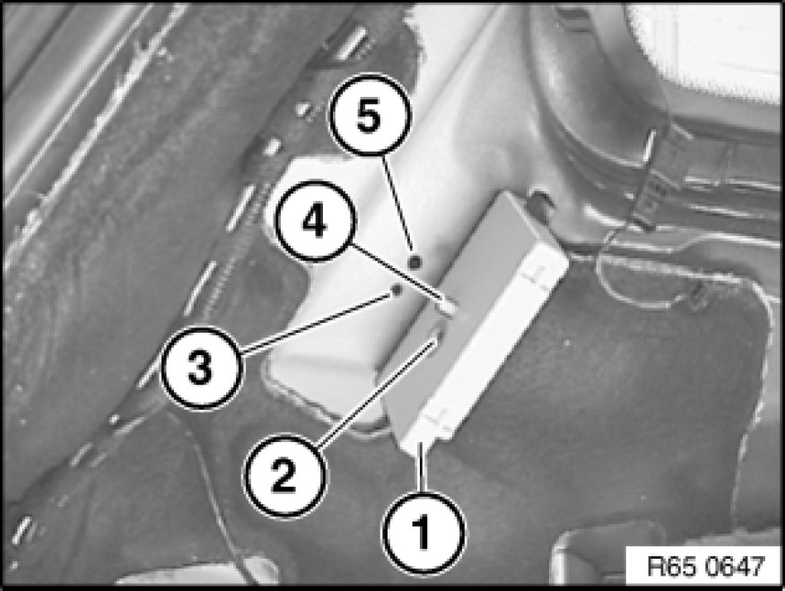

Television / Monitor: Service and Repair
65 24 030 - Removing and installing/replacing TV amplifier (left or right)

Necessary preliminary tasks:
- Remove inner window cavity cover strip Service and Repair for rear side window.
Unlock plug connections (1) and disconnect.
Release screw (2) and remove TV amplifier (3) in direction of arrow.

Installation:
Fit TV amplifier (1) so that screw (2) engages thread (3) and locating pin (4) engages bore (5).